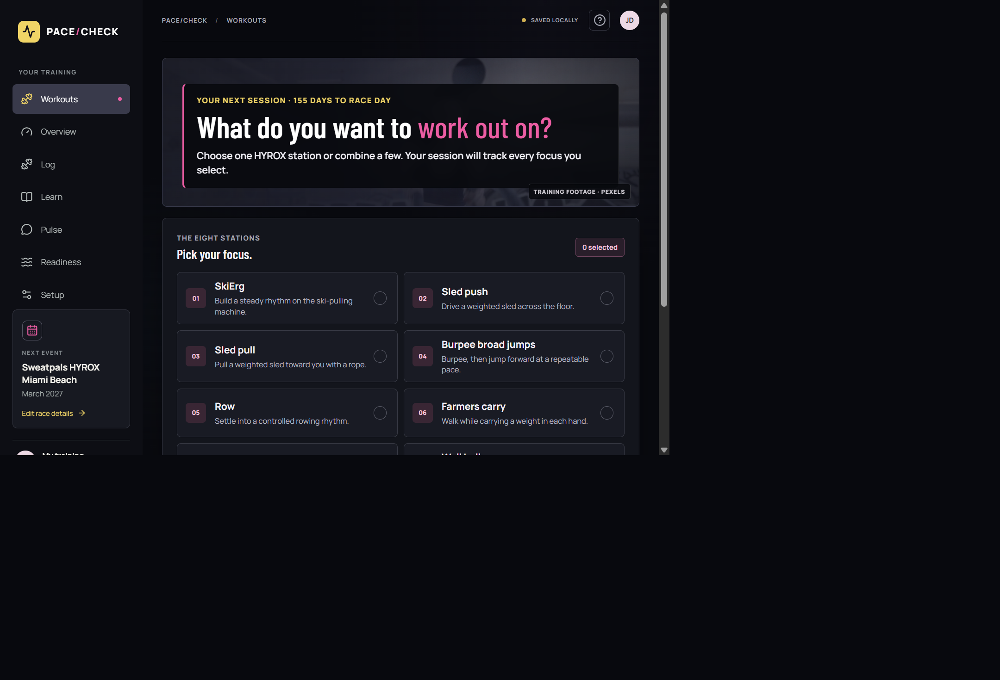
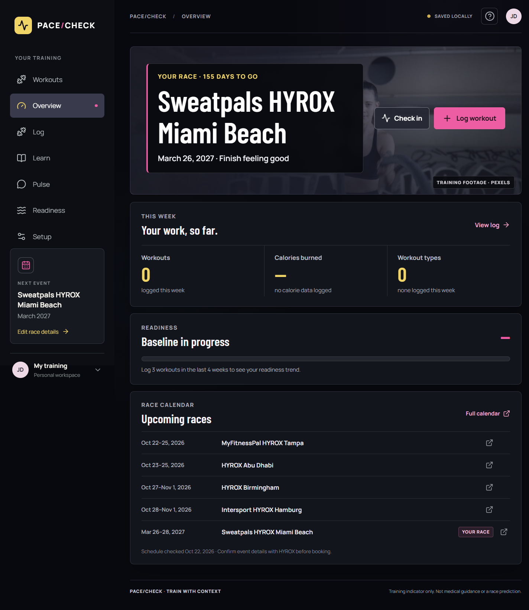
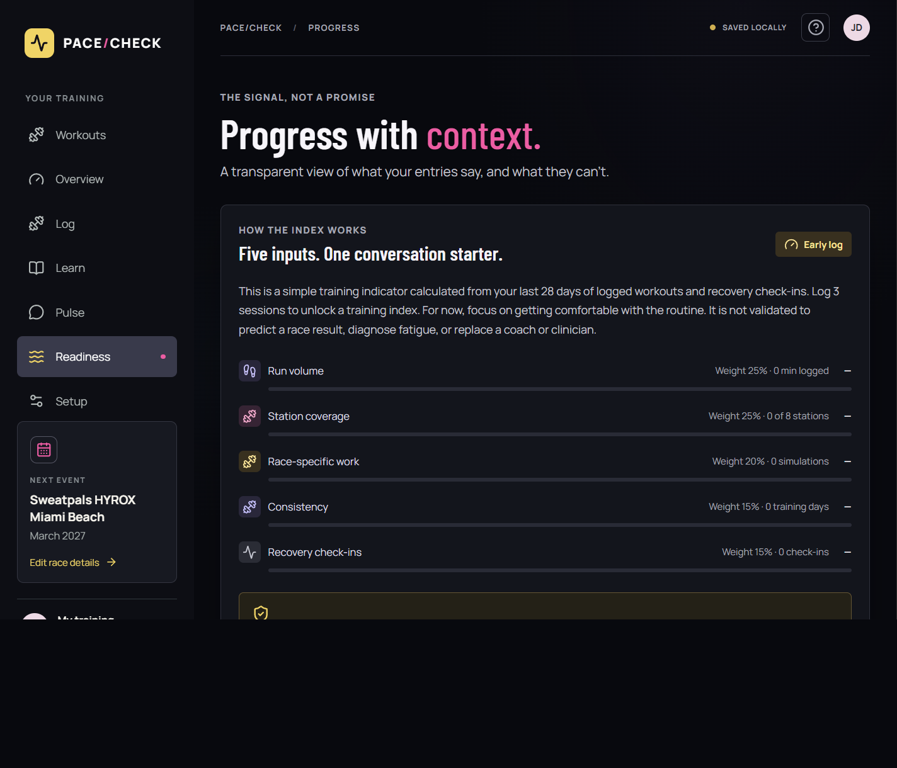
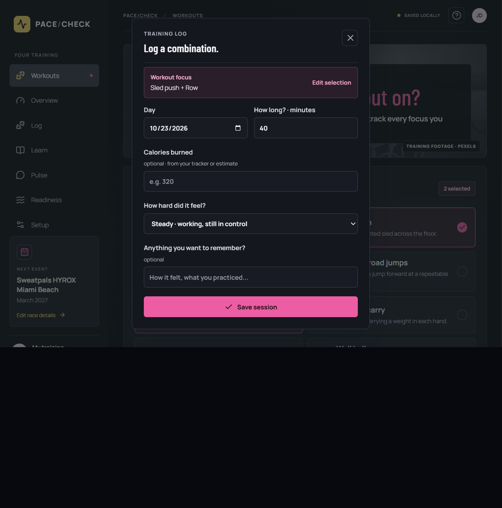

The friction
Workout details sit across memory, notes, wearables, and training apps. Station coverage and run-plus-station practice are hard to see in one glance.
A training companion for the race you signed up for
A HYROX preparation app that helps athletes see what they trained, what they have covered, and what their own records can—and cannot—say about race readiness.
The case in one page
A first HYROX race can leave an athlete with one confusing question: “I trained hard—why didn’t race day feel like training?” PACE/CHECK is built to make preparation easier to review, without pretending a score can predict the finish.
The exact Miami dates and other listed events were checked against HYROX’s Find My Race page on October 22, 2026. The in-app upcoming list is a snapshot, not a live calendar API.
The athlete’s starting point
After training for a solo HYROX, the athlete crossed the line in 1:52. The target was 1:45 or faster—a seven-minute gap. Training, meals, and effort were present; a clear way to connect those inputs to race-specific preparation was not.
Workout details sit across memory, notes, wearables, and training apps. Station coverage and run-plus-station practice are hard to see in one glance.
Can we help an athlete notice training patterns and gaps early enough to ask better questions before race day?
This is a product hypothesis, not proof that the app would have changed the original result. A result depends on many factors—pacing, transitions, conditions, health, sleep, and the day itself—that this prototype cannot observe.
One product, two entry points
Choose one or several of the eight stations. The short guide explains what each involves, and plain-language effort choices avoid requiring training jargon.
Success looks like: getting started, learning the race format, and recording a repeatable week.
Review sessions, station coverage, recovery check-ins, race setup, and an optional AI-generated weekly reflection.
Success looks like: spotting a pattern worth discussing with a coach or changing in the plan.
From first click to saved session

Selecting Sled push + Row creates a single workout record with both focus areas. The session history and coach payload preserve the combination.
Workout count and duration come from entries. Calories are optional and only summed when explicitly supplied.
A glance before the next session
The Overview has been simplified to answer four questions: Which event am I training for? How many days remain? What did I do this week? What does the training signal look like?

Sweatpals HYROX Miami Beach · March 26–28, 2027. Countdown begins on March 26, the weekend start; athletes can edit the date in Setup.
The Overview shows a dated snapshot of upcoming events and links to the HYROX race finder. It is not a live calendar integration.
Source: HYROX Find My Race, checked October 22, 2026. The event page lists Miami Beach as March 26–28, 2027.
A transparent coaching signal
The index is deterministic frontend code. The LLM does not choose, calculate, or modify the score. It summarizes records separately when the athlete asks for a weekly review.
| Factor | Weight | Current rule | What it cannot say |
|---|---|---|---|
| Run volume | 25% | Run and simulation minutes; capped | Race pace capacity or physiological readiness |
| Station coverage | 25% | Distinct station types across recent sessions | Load quality, form, or station skill |
| Race-specific work | 20% | Simulation entries, capped | How representative a simulation was |
| Consistency | 15% | Training days in the recent window | Whether a rest day was appropriate |
| Recovery check-ins | 15% | Self-reported sleep, energy, soreness | Medical readiness or injury risk |

The threshold and factor scales are prototype heuristics chosen for transparency and implementation simplicity, not clinical or sports-science standards.
Where language models help—and where they do not
summarize_training groups sessions by week, totals minutes and effort, and reports station coverage.summarize_recovery summarizes recent self-reported sleep, energy, and soreness. It does not diagnose.Agent retries are set to zero. The frontend sends at most 40 workouts and 14 recovery check-ins. Request text is capped at 500 characters; Pydantic validates the payload.
The agent may still need multiple model requests to call tools and respond. These limits constrain one run; they do not replace provider-level budget alerts or a production rate limiter.
Illustrative cost, not a measured bill
The Portkey path uses gpt-6-luna; the direct OpenAI path defaults to gpt-4o-mini. The table below uses the published OpenAI GPT-6 Luna standard price as a reference—not a claim about the final Portkey invoice.
| Scenario | Input tokens | Output tokens | Illustrative cost |
|---|---|---|---|
| One concise review | 1,500 assumed | 450 max | $0.000375 |
| 100 reviews at same assumption | 150,000 | 45,000 | $0.0375 |
| Four model requests, 1,500 input each | 6,000 assumed | 450 total cap | $0.000825 |
What we know: per-run request/tool/output limits are in code. What we have not measured: actual provider token usage, token-price variance through Portkey, and production volume. No live paid inference was used for this report.
Reference: OpenAI API pricing. A real cost report should record provider usage metadata for each review and calculate actual monthly totals.
Trust boundaries
| Risk | Current control | Remaining limitation |
|---|---|---|
| Prompt injection in user question/log data | System prompt treats user inputs as untrusted; tools only summarize | Prompting is not a complete security boundary; no red-team corpus yet |
| Medical overclaim | Coach prompt prohibits diagnosis, medication advice, and “train through pain” recommendations | No clinical validation or specialized safety classifier |
| Unbounded model use | 4 requests, 2 tool calls, 450 output tokens, zero retries | No per-user rate limit or provider budget alarm in prototype |
| Secret exposure | Key is server-side in ignored `.env`; `.env.example` contains placeholders only | No deployment secret manager configured |
| Sensitive training data | Local browser storage; coach sends a bounded subset only when asked | Local storage is not encrypted, synced, or account-isolated |
| External social content | Reddit parser strips markup and accepts Reddit-hosted URLs; other platforms open source pages | Upstream RSS can fail/rate-limit; no moderation guarantee |
CORS allows local development origins. The prototype has no authentication, database, production webhook, wearable sync, or push reminder service. These are deployment prerequisites, not hidden capabilities.
Evidence available today

No user study, controlled readiness validation, AI quality benchmark, or live model-cost measurement has been performed. Those are explicit next steps.
What success should mean
There is no evidence yet that the app improves finish time. A responsible pilot should first determine whether athletes log consistently, understand the indicator, and find the station coverage view useful.
| Horizon | Build | Proof required |
|---|---|---|
| Next | Collect pilot feedback; improve score confidence and calorie source labels | Usability sessions and error-free workflow |
| Then | Persistent backend, accounts, consent, and encrypted provider tokens | Threat model and privacy review |
| Later | Strava webhook, iOS HealthKit, Garmin program integration, push reminders | API approvals, public HTTPS, mobile app, provider terms |
Connected-device ingestion and closed-app push notifications are not implemented in this submission.
References